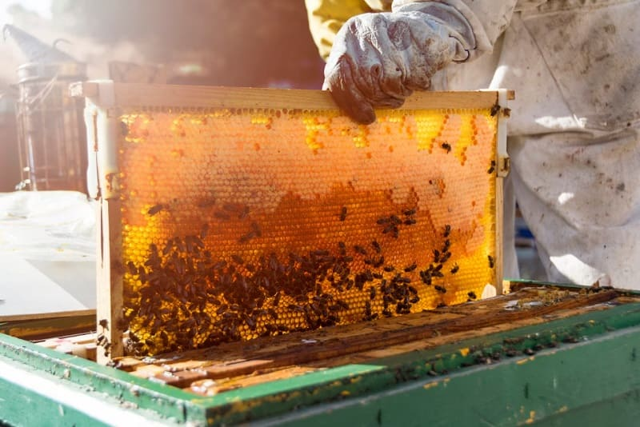
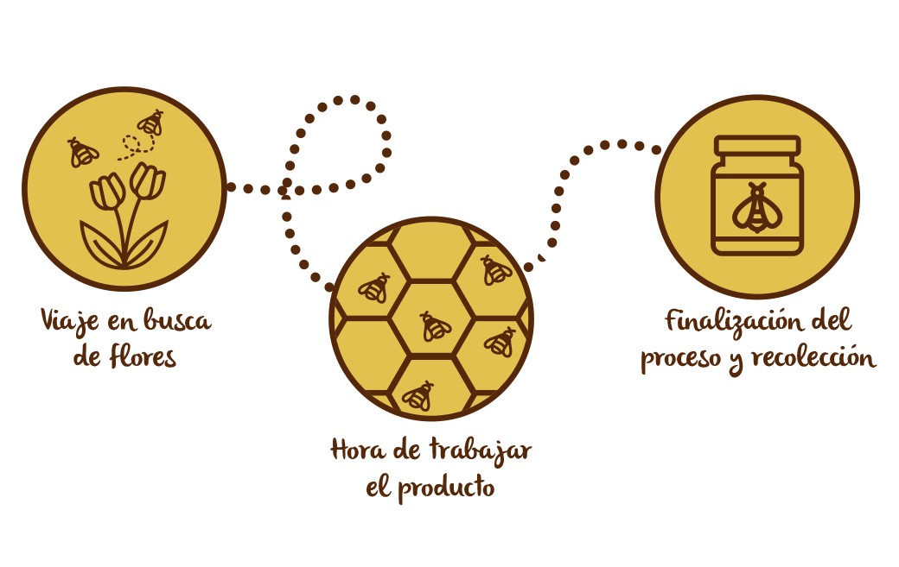

PROCESO DE ELABORACION DE LA MIEL


Extraccion del nectar de las flores
El proceso de elaboración de la miel comienza con la recolección del néctar de las flores. En este paso, las abejas obreras adultas, es decir, con al menos 21 días, sobrevuelan las flores para extraer el néctar.
Para ello, las abejas chupan las flores con sus largas lenguas.
No todas las flores son aptas para la elaboración de miel. Las abejas solo extraen el polen de determinadas flores.
Cuando los apicultores quieren obtener mieles de determinadas flores, lo que hacen es colocar las colmenas junto a las flores que quieren que polinicen.
Así, se elabora la miel de acacia, de azahar, de romero, etc.